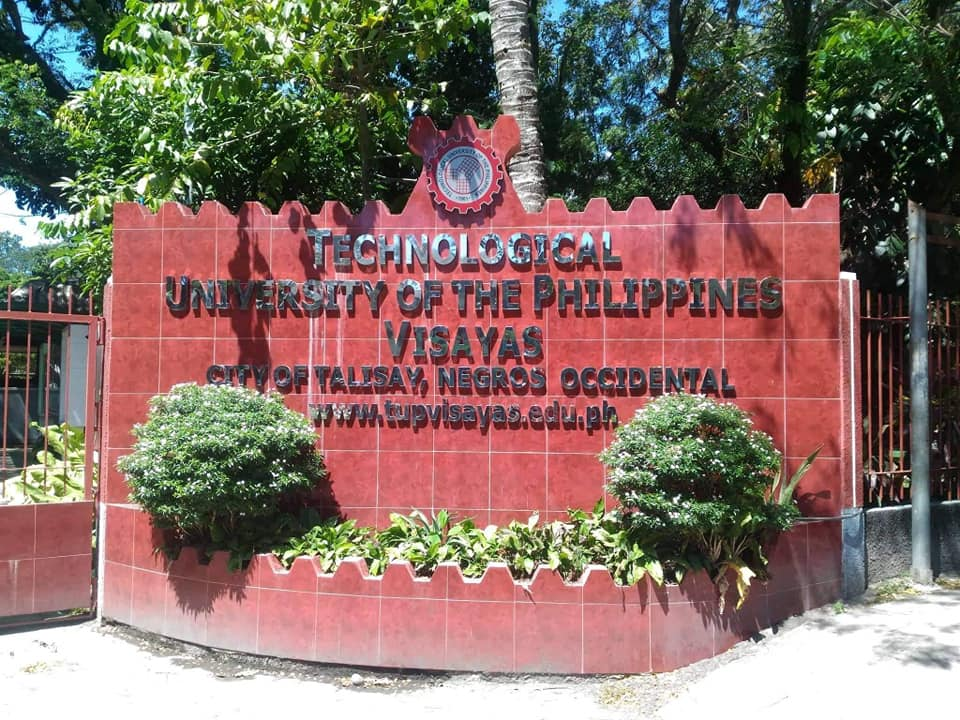
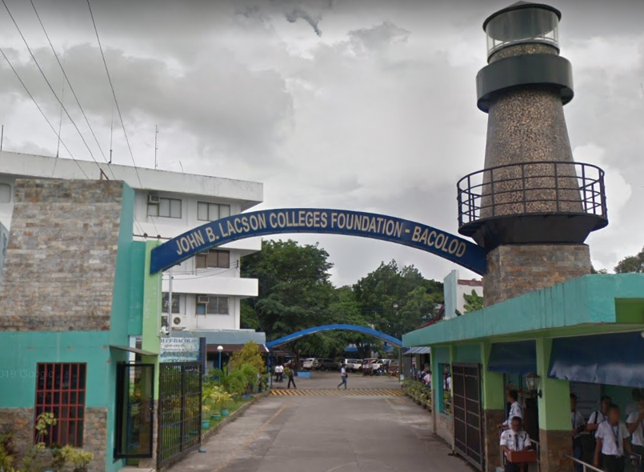
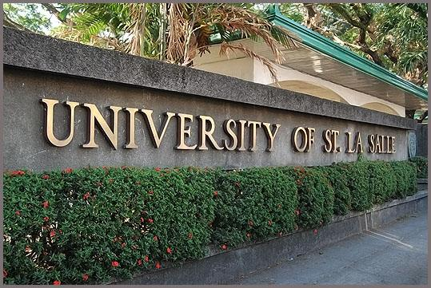
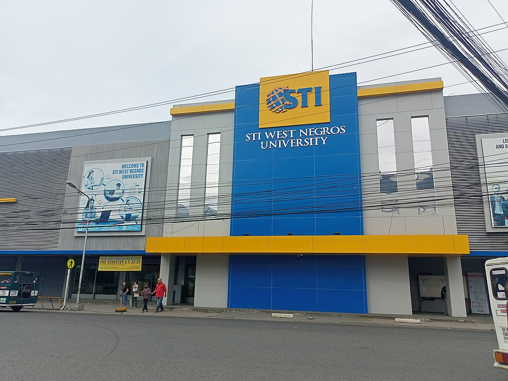
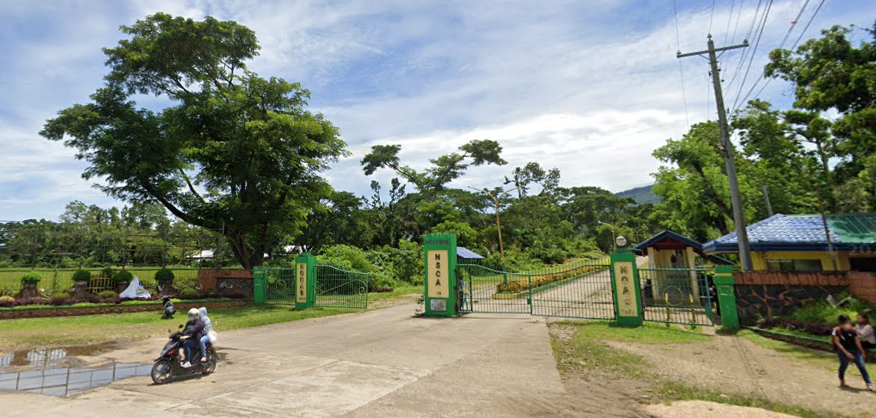
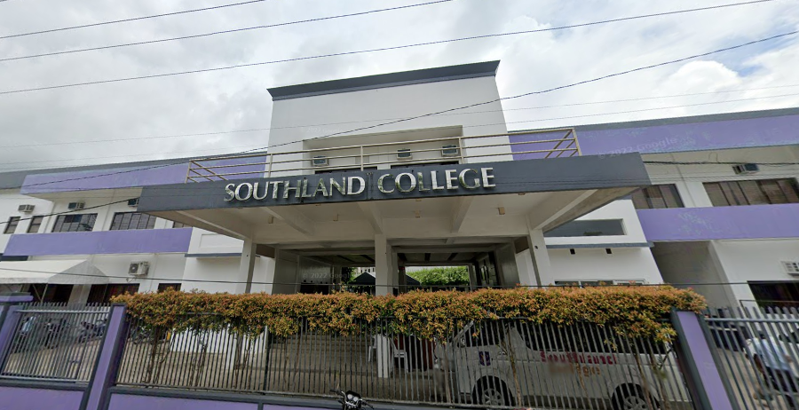
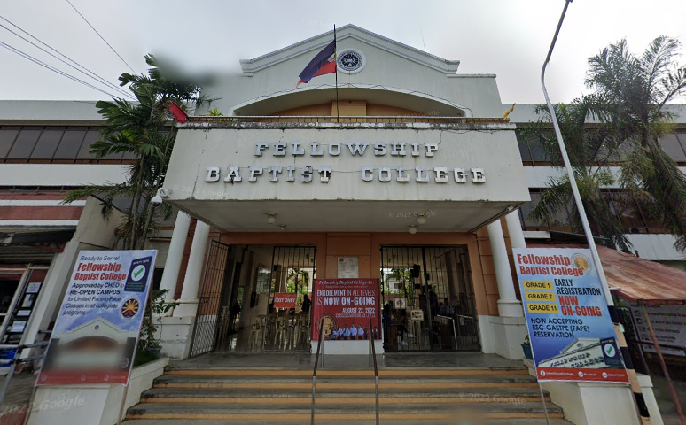
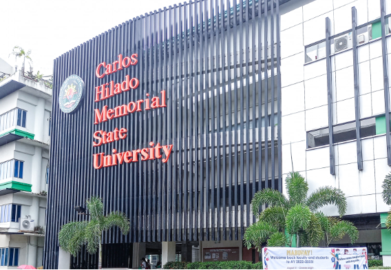
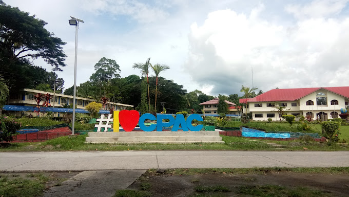

 The Technological University of the Philippines Visayas (TUPV) is a prestigious educational institution located in the Visayas region of the Philippines. With a strong emphasis on technology and engineering education, TUPV provides students with a dynamic and innovative learning environment. Through its state-of-the-art facilities, experienced faculty, and comprehensive programs, TUPV equips students with the necessary knowledge and practical skills to excel in their chosen fields. The university's commitment to academic excellence, industry partnerships, and holistic development make TUPV a premier destination for students seeking a well-rounded education in technology and engineering.
 The engineering course offered at John B. Lacson Foundation Maritime University-Bacolod (JBLFMU-Bacolod) is a comprehensive program designed to prepare students for a successful career in the maritime engineering field. With a strong emphasis on practical training and theoretical knowledge, the course equips students with the skills and competencies necessary to excel in areas such as marine engineering, naval architecture, and offshore engineering. Under the guidance of experienced faculty members and utilizing state-of-the-art facilities, students engage in hands-on learning experiences that include practical workshops, simulation laboratories, and industry-focused projects. With a focus on industry relevance, JBLFMU-Bacolod's engineering course ensures that graduates are well-prepared to tackle the challenges of the maritime engineering sector and contribute to the advancement of the maritime industry as a whole.
 The engineering course offered at the University of St. La Salle Bacolod (USLS) is a rigorous and comprehensive program that equips students with the knowledge, skills, and practical experience necessary to excel in the field of engineering. With a strong emphasis on academic excellence and professional development, the course covers various disciplines such as civil engineering, mechanical engineering, electrical engineering, and chemical engineering. Through a combination of classroom instruction, laboratory work, and hands-on projects, students gain a deep understanding of engineering principles and their applications in real-world scenarios. The faculty at USLS consists of experienced professionals who provide mentorship and guidance to ensure that students receive a well-rounded education. Additionally, the university fosters industry partnerships and internship opportunities, enabling students to gain valuable practical experience and establish connections in the engineering field. Graduates of the engineering course at USLS are well-prepared to embark on successful careers in engineering, contributing to the advancement of society through innovative solutions and sustainable development.
 The engineering course offered at STI West Negros University Bacolod is a comprehensive program that prepares students for a rewarding career in various engineering fields. With a focus on practical application and hands-on learning, the course equips students with the necessary technical skills, theoretical knowledge, and problem-solving abilities. Through a combination of classroom lectures, laboratory experiments, and industry-based projects, students gain a deep understanding of engineering principles and their practical implementation. The dedicated faculty members provide guidance and mentorship to ensure that students receive a quality education that aligns with industry standards. Additionally, the university fosters industry connections and provides internship opportunities, allowing students to gain valuable real-world experience and establish professional networks. Graduates of the engineering course at STI West Negros University Bacolod are well-prepared to meet the demands of the engineering profession and contribute to the development and innovation in their chosen fields.
 The engineering course offered at Central Philippines State University (CPSU) is a comprehensive program that prepares students for a successful career in the field of engineering. With a strong emphasis on practical application and theoretical foundations, the course equips students with the necessary knowledge and skills to tackle engineering challenges in various industries. CPSU provides state-of-the-art laboratories, workshops, and modern facilities that enable students to engage in hands-on learning experiences and develop their technical expertise. The dedicated faculty members, who possess extensive industry experience, provide guidance and mentorship to students throughout their academic journey. CPSU also emphasizes research and innovation, encouraging students to explore new technologies and contribute to the advancement of engineering knowledge. With its commitment to excellence and industry relevance, the engineering course at CPSU prepares graduates to become competent and highly sought-after professionals in the field of engineering.
 The engineering course offered at Southland College of Kabankalan (SCK) is a comprehensive program designed to prepare students for a successful career in the field of engineering. With a strong focus on theoretical knowledge and practical application, the course equips students with the skills and competencies necessary to excel in various engineering disciplines. SCK provides a conducive learning environment with modern laboratories and well-equipped facilities that allow students to engage in hands-on experiences and gain real-world exposure. The dedicated faculty members, who are industry professionals themselves, provide personalized guidance and mentorship to ensure that students receive a high-quality education. SCK also emphasizes industry partnerships and internships, providing students with opportunities to apply their skills in real-world settings and establish connections in the engineering industry. Upon graduation, students from SCK's engineering course are well-prepared to contribute to the advancement of the engineering field and pursue successful careers in their chosen specialization.
 Fellowship Baptist College in Kabankalan offers a comprehensive engineering course designed to equip students with the knowledge and skills needed for a successful career in the field of engineering. The program focuses on a strong theoretical foundation, coupled with practical applications and hands-on experience. Students at Fellowship Baptist College benefit from a supportive learning environment, dedicated faculty members, and modern facilities that facilitate their learning journey. The engineering course covers various disciplines, allowing students to specialize in areas such as civil engineering, mechanical engineering, or electrical engineering. Through industry partnerships and internship opportunities, students gain real-world exposure and develop a strong understanding of industry practices. Upon graduation, students from Fellowship Baptist College's engineering course are well-prepared to contribute to the engineering field and make a positive impact in their professional careers.
 The civil engineering course offered at Carlos Hilado Memorial State University (CHMSU) provides students with a comprehensive education in the field of civil engineering. With a strong focus on theoretical foundations and practical applications, the program equips students with the knowledge and skills required to plan, design, and construct infrastructure projects. CHMSU's civil engineering course covers a wide range of subjects, including structural analysis, transportation engineering, geotechnical engineering, and environmental engineering. Students have access to well-equipped laboratories and facilities, enabling them to conduct experiments and simulations that enhance their understanding of engineering principles. The experienced faculty members at CHMSU guide students through their academic journey, fostering critical thinking, problem-solving, and communication skills. The university also encourages students to engage in industry internships, research projects, and community outreach programs, providing valuable real-world experiences. Upon completion of the civil engineering course at CHMSU, graduates are well-prepared to meet the challenges of the profession and contribute to the sustainable development of society through their expertise in infrastructure planning and construction.
 The engineering course offered at Central Philippine Adventist College (CPAC) provides students with a strong foundation in the field of engineering while emphasizing values-based education. The program offers a comprehensive curriculum that covers various engineering disciplines, including civil engineering, electrical engineering, and mechanical engineering. CPAC's engineering course combines theoretical knowledge with practical applications through laboratory work and hands-on projects. Students benefit from well-equipped facilities and modern technologies that facilitate experiential learning. The dedicated faculty members at CPAC provide mentorship and guidance, ensuring that students receive a holistic education that integrates technical skills with ethical values and a commitment to service. The engineering course at CPAC prepares graduates to excel in their chosen field, making positive contributions to society through their technical expertise and adherence to ethical principles.
Red Aeronautics Technological Institute, Inc. offers an exceptional aeronautical engineering course that equips students with the knowledge and skills necessary for a rewarding career in the aviation industry. The program focuses on providing a comprehensive understanding of aeronautical principles, aircraft design, maintenance, and aviation safety. Students at Red Aeronautics benefit from state-of-the-art facilities and training equipment, including flight simulators and aircraft maintenance labs, which allow for hands-on learning experiences. The experienced faculty members, many of whom have extensive industry backgrounds, provide expert guidance and mentorship to students throughout their academic journey. Red Aeronautics' aeronautical engineering course also emphasizes practical training through internships and industry partnerships, giving students real-world exposure and opportunities to apply their skills in professional settings. Graduates of the program are well-prepared to take on key roles in the aviation industry, contributing to the development and innovation of the field.